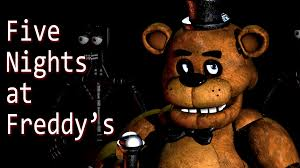
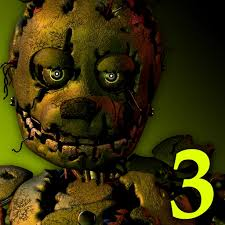
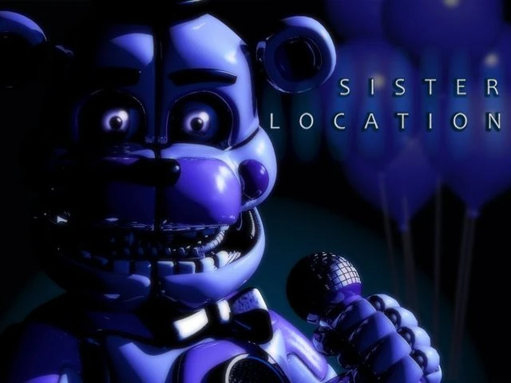
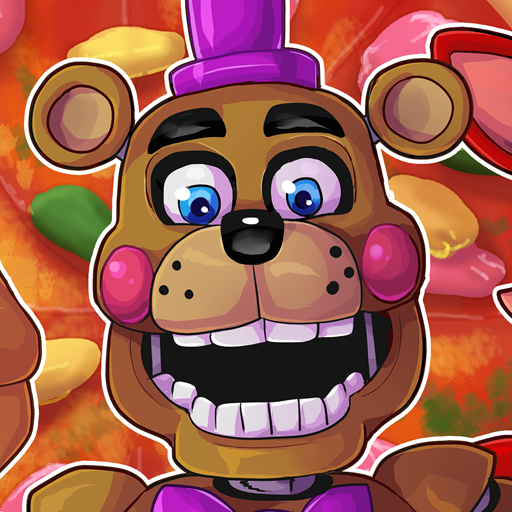
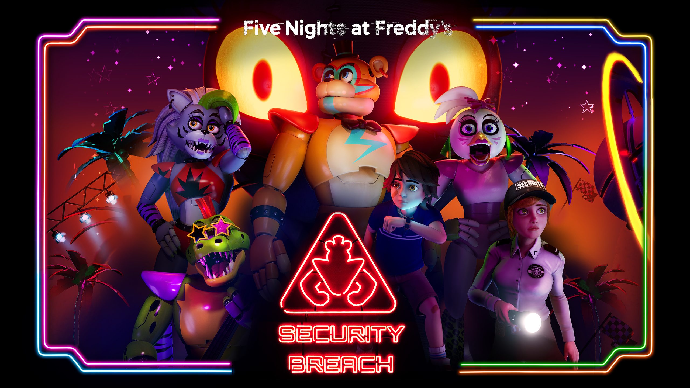
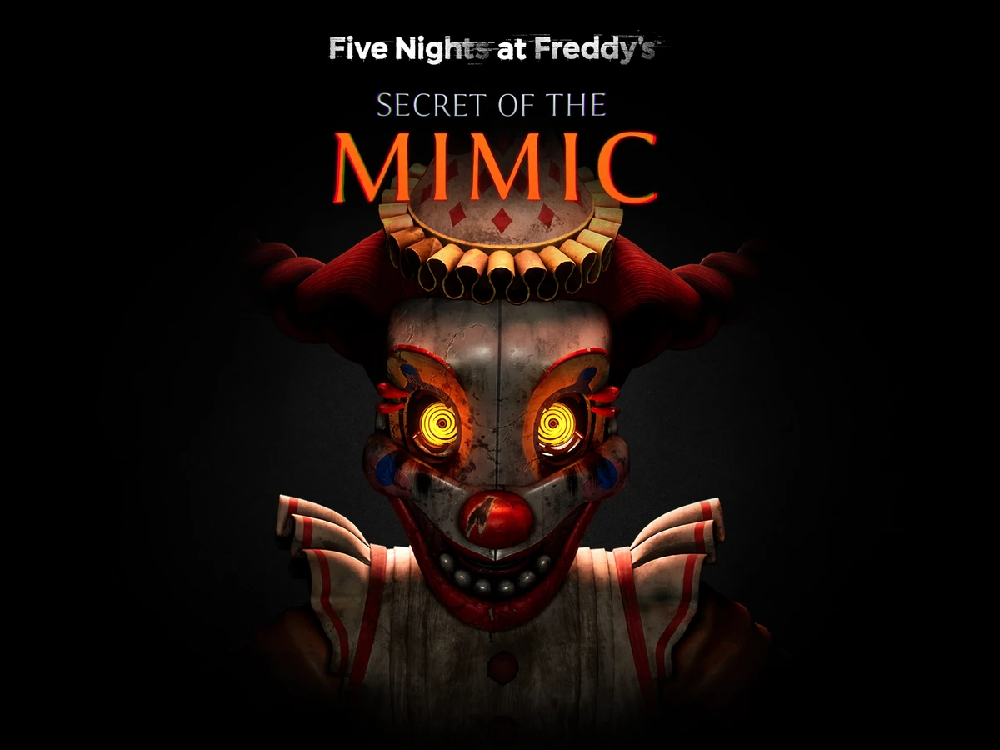

Five Nights at Freddy's, een mediafranchise gebaseerd op een indie point-and-click horrorvideogameserie,
gemaakt door Scott Cawthon. De serie draait om het universum van verschillende fictieve restaurantketens
(parodieën op bestaande restaurants zoals Chuck E. Cheese's en ShowBiz Pizza Place) die worden beheerd door
Fazbear Entertainment.
Fnaf 1(2014)

De speler speelt als Mike Schmidt, de nieuwe nachtwaker in het restaurant. Een voicemailbericht dat is
achtergelaten door zijn voorganger (Phone Guy) vertelt dat de robots vrij rondlopen en 's nachts 'ietwat
eigenzinnig' worden. Uitgeknipte krantenstukjes op de muur vertellen over vijf kinderen die ooit naar een
achterkamer zijn gelokt tijdens een kinderfeest door iemand in een kostuum van een konijnengast genaamd
Spring Bonnie. De dader is nooit gearresteerd en de kinderen zijn nooit teruggevonden.
Fnaf 2(2014)
De speler speelt als nachtwaker Jeremy Fitzgerald, die werkt bij Freddy Fazbear's Pizza. In een
voicemailbericht dat is achtergelaten, vertelt een man ('Phone Guy' genoemd) over de animatronics en hoe men
ze het best kan ontwijken. Verder vertelt hij dat de speler alles moet vergeten over het vorige restaurant,
omdat het een slechte reputatie had.
Hoewel dit spel het tweede uit de reeks is, is er sprake van een prequel en spelen de gebeurtenissen zich af
voor die van het eerste spel.
Fnaf 3(2015)

Dertig jaar nadat Freddy Fazbear's Pizza zijn deuren sloot, zijn de gebeurtenissen die daar plaatsvonden niet
meer dan een gerucht en een jeugdherinnering geworden. Maar de eigenaren van " Fazbear's Fright: The Horror
Attraction " zijn vastbesloten om de legende nieuw leven in te blazen en de ervaring zo authentiek mogelijk
te maken voor de bezoekers. Ze doen er alles aan om alles te vinden dat de decennia van verwaarlozing en
verval heeft overleefd.
Aanvankelijk waren er alleen lege hulzen, een hand, een haak, een oude papieren bordpop, maar toen werd er
een opmerkelijke ontdekking gedaan...
De attractie heeft nu nog één animatronic.
Fnaf 4(2015)
Het verhaal speelt zich af in 1983. Fredbear's Family Diner is net geopend en het is Chris/Evan Afton (de
zoon en het perspectief waaruit de speler de game speelt) zijn verjaardag. Chris/Evan wordt ook wel The
Crying Child genoemd, omdat hij gewoonlijk in tranen uitbarst als zijn broer Michael/Terrance Afton hem laat
schrikken met zijn Foxy-masker. Helaas is Chris/Evan tragisch overleden nadat zijn broer en een paar
vrienden van Michael/Terrance, Chris/Evan in de bek van Fredbear (creatie van Henry Emily) hebben geschoven.
Fredbear heeft toen door een storing een hap van Chris/Evan genomen en is met spoed naar het ziekenhuis
gebracht. In het ziekenhuis is Chris/Evan overleden, maar voordat Chris/Evan overlijdt, is hij vijf dagen in
coma. Op het moment dat deze vijf dagen beginnen, start de gameplay voor de speler.
Fnaf Sister Location(2016)

Welkom bij Circus Baby's Pizza World , waar familieplezier en interactie alles overtreffen wat je ooit bij
*andere* pizzeria's hebt gezien! Met hypermoderne animatronische entertainers die je kinderen versteld
zullen doen staan, en pizzacatering op maat, is geen feest compleet zonder Circus Baby en de rest van de
bende!
Nu gezocht: Technicus voor de late avond. Moet geen problemen hebben met krappe ruimtes en zich op hun gemak
voelen in de buurt van actieve machines. Wij zijn niet aansprakelijk voor overlijden of verminking.
Fnaf Pizzeria Simulator(2017)

Begin je eigen Freddy Fazbear's Pizzeria met Freddy Fazbear Pizzeria Simulator!
Freddy Fazbear's Pizzeria Simulator biedt een leuk Five Nights at Freddy's-avontuur met een luchtiger tintje
voor de feestdagen. Jij bent de baas over het opzetten van je eigen restaurant! Ontwerp pizza's, geef
kinderen te eten en behaal hoge scores!
Fnaf Security Breach(2021)

In Five Nights at Freddy’s: Security Breach speel je als Gregory, een jongen die ’s nachts vastzit in het
grote winkelcentrum Freddy Fazbear’s Mega Pizzaplex. De meeste animatronics beginnen hem te achtervolgen,
maar Glamrock Freddy helpt Gregory juist om te overleven en te ontsnappen. Terwijl Gregory door het gebouw
sluipt en zich verstopt voor andere animatronics en de bewaker Vanny, ontdekt hij dat er iets mis is in het
Pizzaplex. Uiteindelijk probeert Gregory tot de ochtend te overleven en een manier te vinden om te
ontsnappen, waarbij hij ook geheimen ontdekt over Vanny en wat er echt in het gebouw gebeurt.
Fnaf Secret Of The Mimic(2025)

Betreed de verlaten werkplaats van Murray's Costume Manor en ontrafel het mysterie dat de teruggetrokken
uitvinder Edwin Murray heeft achtergelaten . In Five Nights at Freddy's: Secret of the Mimic stap je een
wereld binnen waar elke donkere hoek een geheim verbergt en elk flikkerend lichtje wijst op een altijd
aanwezige dreiging. De Mimic , een prototype endoskelet, kan zich aanpassen aan elk kostuum en elk personage
worden, inclusief datgene waar je het meest bang voor bent. Gewapend met alleen je verstand, een paar
gadgets en een zwaar gecensureerde bedrijfsbriefing, probeer je Fazbear 's kostbare prototypetechnologie
terug te vinden, terwijl je worstelt met cryptische aanwijzingen en een meedogenloze schaduw die
vastbesloten is om alle ongewenste bezoekers uit de weg te ruimen.